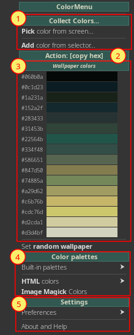

Color Menu
nietypowe narzędzie do pracy z koloramiMożliwości:
- pobieranie kolorów z ekranu oraz zarządzanie paletami
- kopiuj lub wklejaj kody kolorów (hex, rgb lub rgba)
- automatyczne generowanie palety kolorów z obecnie ustawionej tapety
- Dodaj kolory - dodaj kolory z ekranu lub selektora GTK
- Konfigurowalna Akcja: copy (kopiuj do schowka) lub paste (natychmiast wklej w pozycji kursora)
- Paleta w menu głównym - kolory z tapety (domyślnie), wbudowana paleta, własna paleta lub lista ostatnio dodanych kolorów
- Więcej palet, kolory HTML, kolory ImageMagick
- Ustawienia oraz Pomoc